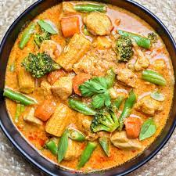
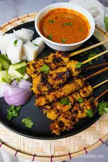
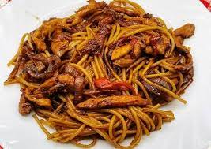

GASTRONOMÍA TAILANDESA
Este es el último apartado, la gastronomía tailandesa. Creo que fue hace unos 3 años cuando probé por primera vez la comida tailandesa, y desde ese momento la he comida varias veces. Creo que ha sido suficiente como para decir que la gastronomía tailandesa es una de las mejores que he probado, aunque no me esperaba menos de la gastronomía oriental. Estos son los platos más famosos.
CURRY MASSAMAN
- El curry massaman (una palabra que significa “musulmán”) es uno de los platos tailandeses más famosos, y su nombre se debe a su procedencia del sur del país, donde la mayoría de la población es musulmana. Tradicionalmente se prepara con carne de ternera o pollo, acompañada de arroz blanco y una mezcla a base de pepino, guindilla y azúcar de palma. Este curry se diferencia por su característico sabor a cacahuete, que te sorprenderá tanto como me sorprendió a mí.

SATAY
- Las satay son unas deliciosas brochetas de pequeño tamaño hechas normalmente con carne de cerdo marinado y leche de coco, que se acompañan con una sabrosa salsa de cacahuete que le da un sabor muy original. Suelen tomarse acompañadas de arroz y son un aperitivo perfecto, muy popular en Tailandia, si bien pueden encontrarse también en otros países del sureste asiático.

PAD THAI
- La traducción de Pad Thai, significa “Salteado tailandés” y algo muy característico es la combinación balanceada entre sabores agridulces y picantes. Los elementos principales son los tallarines de arroz, verduras, brotes de soja, huevo, camarones, cacahuates picados y picante.
